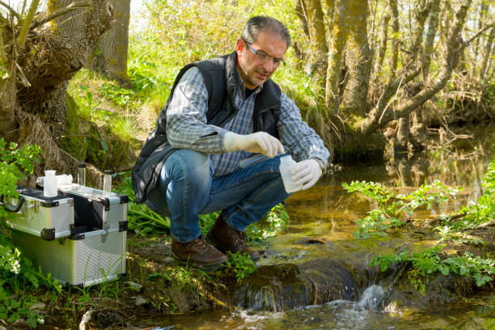
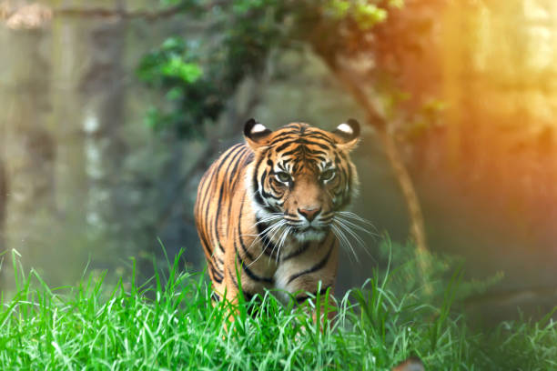

Wildlife conservation is the practice of protecting animal species and their habitats. As human impact on the natural world continues to escalate, it becomes increasingly important to protect our biodiversity. This website is dedicated to raising awareness about the threats to wildlife and offering ways that individuals and organizations can get involved to make a positive impact.


About Us
Founded in 1999, our organization has been at the forefront of wildlife conservation efforts. Our team is comprised of dedicated scientists, researchers, educators, and activists who work tirelessly to conserve natural habitats and promote awareness about the importance of biodiversity. Our mission is to ensure that wildlife populations thrive, and ecosystems are preserved for future generations.
Our History: Starting as a grassroots initiative, our organization quickly grew into an influential voice in wildlife conservation. With over two decades of experience, we have become leaders in global conservation efforts.
Core Values
Sustainability: Ensuring that conservation efforts are long-lasting and have minimal environmental impact.
Collaboration: Working alongside local communities, governments, and international organizations to achieve our goals.
Innovation: Applying the latest research and technology to conservation projects.
Education: Spreading awareness and empowering communities to take action for wildlife protection.
Conservation Projects
Current Projects
We are working on a variety of initiatives that target some of the world's most pressing environmental issues:
Elephant Conservation: Combatting poaching and preserving habitats in sub-Saharan Africa.
Coral Reef Restoration: Protecting marine biodiversity by restoring coral reefs in the Caribbean.
Amur Leopard Protection: Safeguarding the last remaining Amur leopards in Russia and China.
Past Projects
Our past efforts have led to significant positive change:
Rhino Protection: Working with local communities to reduce poaching and increase rhino populations in Southeast Asia.
Volunteer with us and help make a difference! We offer opportunities to join our field programs, assist with research, and participate in education outreach.
Internships & Partnerships
Internships provide hands-on experience in conservation science, policy advocacy, and nonprofit management. We also welcome partnerships with other organizations working towards a common goal.
Make a Donation
Your generous contributions allow us to continue our vital work protecting endangered species and preserving natural habitats.
Education & Resources
We provide educational articles, videos, and infographics to spread awareness about the importance of conservation.
Articles
Explore a collection of articles written by experts in the field of wildlife conservation and biodiversity.
Videos
Watch educational videos showcasing our conservation efforts, and the impact they have on ecosystems worldwide.
Upcoming Events
Join us for events that support wildlife conservation:
Wildlife Conservation Webinar: Join us for an online discussion on the challenges facing endangered species.
Annual Fundraising Gala: A fundraising dinner to raise awareness and support for wildlife conservation efforts.
News & Blog
Stay informed with the latest updates, success stories, and conservation news from around the world.
Contact Us
If you have any questions or want to get involved, please reach out to us:
Frequently Asked Questions
What is wildlife conservation?
Wildlife conservation is the effort to protect animals, plants, and their habitats from human-caused threats like poaching, habitat destruction, and climate change.
How can I get involved?
There are many ways you can contribute: by donating, volunteering, attending events, and spreading awareness.